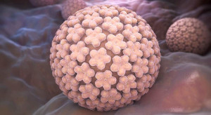

O VacinaDigital é o seu melhor aliado no combate à várias doenças.
Seja lembrado com antecedência quando precisar tomar sua próxima vacina.
Sua saúde em primeiro lugar.
-
A poliomielite, também chamada de pólio ou paralisia infantil, é uma doença contagiosa aguda causada por um vírus que vive no intestino, chamado poliovírus, que pode infectar crianças e adultos por meio do contato direto com fezes ou com secreções eliminadas pela boca das pessoas infectadas e provocar ou não paralisia. Nos casos graves, em que acontecem as paralisias musculares, os membros inferiores são os mais atingidos.
- 
O QUE SIGNIFICA HPV ?
A sigla HPV corresponde a um conjunto de vírus chamado papilomavírus humano. Os HPV são vírus sexualmente transmissíveis que infectam pele ou mucosa, provocando verrugas ou lesões que podem ser precursoras de cânceres.